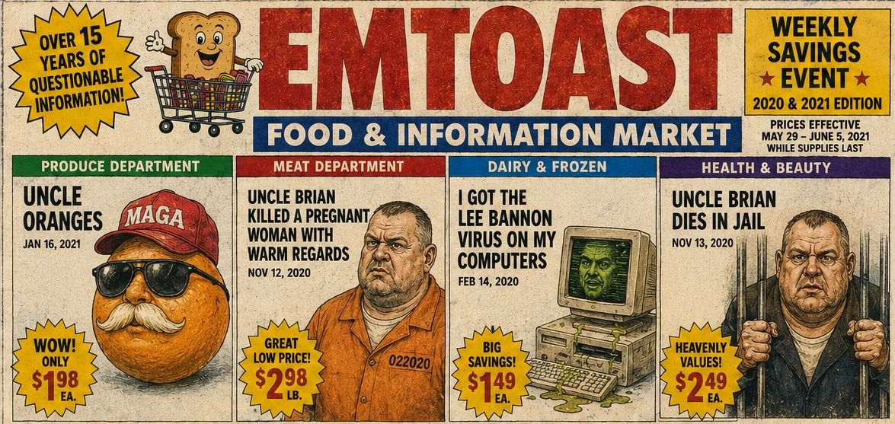

EMToast: The Pandemic, Paranoia, and Digital Chaos (2020–2021) | Podcast Deep Dive


EMToast: The Pandemic, Paranoia, and Digital Chaos (2020–2021) | Podcast Deep Dive explores one of the strangest chapters in EMToast history, where internet absurdity collided with the uncertainty, isolation, and chaos of the COVID-19 pandemic era.
In this episode, we revisit the bizarre digital artifacts, strange characters, dark humor, and surreal stories that defined EMToast during 2020 and 2021. From "I Got the Lee Bannon Virus On My Computers" and the mysterious Uncle Brian stories to "President's MAGA Loving Half Brother Jonathan Biden," "WARNING! 6roguepackets .emtoast! rootdll! plock@mm.exe.virus," and "Happy ASCII Thanksgiving," we examine the strange world of EMToast during one of the most unusual periods in modern internet history.
Was EMToast documenting the chaos around it? Was it satire, performance art, or just an exploration of the weird corners of online culture? This episode explores misinformation, digital paranoia, internet nostalgia, and the strange artifacts left behind during the pandemic years.
Read the original posts discussed in this episode:
EMToast Timeline:
https://emtoa.st/yearly-timeline/
2020 Archive:
https://emtoa.st/yearly-timeline/#year-2020
2021 Archive:
https://emtoa.st/yearly-timeline/#year-2021
Visit EMToast:
https://emtoa.st/
Graphics from this episode are below:
{kind=link}
{kind=link}
{kind=link}
{kind=link}
{kind=link}
{kind=link}
{kind=link}
{kind=link}
{kind=link}
{kind=link}
{kind=link}
{kind=link}
{kind=link}
{kind=link}
{kind=link}
{kind=link}
{kind=link}
EMToast: The Pandemic, Paranoia, and Digital Chaos (2020–2021) Transcript:
HOST 1: Alright, so today we're diving deep into the internet's memory bin. We're dusting off some really bizarre excerpts from a site called EMToast.com.
HOST 2: Picture an early 2000s blog, but it's run by someone who clearly just enjoys messing with us.
00:15
HOST 1: We're talking about things like "I Got the Lee Bannon Virus On My Computers" and the strange stories about Uncle Brian. It's like opening a time capsule full of random scraps of paper — intriguing, but completely out of context.
HOST 2: The real puzzle we're trying to solve today is whether there's a bigger picture hidden somewhere in these digital breadcrumbs.
00:30
HOST 1: Is this performance art? Is it a cry for help? Or is it just someone incredibly bored with a strange sense of humor?
HOST 2: The variety of writing styles and the sheer randomness of the topics point to a mind that thrives on the unexpected.
00:45
HOST 1: Our mission today is to figure out if there's a method to the madness — some kind of narrative thread connecting these seemingly unrelated pieces.
HOST 2: And speaking of threads, let's talk about "I Got the Lee Bannon Virus On My Computers."
01:00
HOST 1: That title alone is a trip, especially knowing what we know now about Steve Bannon, misinformation, and online influence campaigns.
HOST 2: The interesting thing is that this post appeared in February 2020, before Bannon became even more associated with some of those online controversies.
01:15
HOST 1: So the question becomes: is it satire, incredible timing, or just a wild coincidence?
HOST 2: Those layers of uncertainty are what make EMToast so fascinating.
01:30
HOST 1: But we can't forget about recurring themes and characters, especially those strange uncle figures. They might actually hold the key to understanding the site's overall narrative.
HOST 2: Let's unpack the uncle situation.
01:45
HOST 1: We have Uncle Brian, who definitely wouldn't be winning any family awards.
HOST 2: The stories about him are wild — "Uncle Brian Killed a Pregnant Woman With Warm Regards" and "Uncle Brian Dies in Jail."
02:00
HOST 1: These entries create this unsettling combination of dark humor, tragedy, and absurdity.
HOST 2: It feels like EMToast is using extreme situations to explore the darker sides of family relationships and societal expectations.
02:15
HOST 1: Then there's Uncle Oranges, which is much shorter and much stranger.
HOST 2: It basically says this uncle got some trouble. Something wrong with the bones? Too many peaches. Bones in peaches?
02:30
HOST 1: It's fascinating because the tone suddenly shifts. We go from cartoonishly dark humor into something more mysterious and unsettling.
HOST 2: The references to bones and peaches almost feel like clues in a larger story — but we're missing half the script.
02:45
HOST 1: It's like we're getting a glimpse into some strange family drama without knowing the full story.
HOST 2: And speaking of strange family drama, we can't forget "President's MAGA Loving Half Brother Jonathan Biden."
03:00
HOST 1: That one is especially interesting because, while it isn't about an uncle, it shares the same style of exaggerated characters and absurd situations.
HOST 2: We have this flat-earth believing, MAGA-loving Biden brother character — basically a caricature of the political climate of the time.
03:15
HOST 1: Remember, this was 2021, when misinformation was everywhere, especially in politics.
HOST 2: It's like EMToast is holding up a funhouse mirror and saying, "Look how ridiculous everything has become."
03:30
HOST 1: One clever detail is that the post encourages readers to leave their own Jonathan stories in the comments.
HOST 2: That brings back the classic blog-era interaction — where readers could become part of the weird world being created.
03:45
HOST 1: It makes you wonder if anyone actually left comments and what kind of bizarre stories might have been added.
HOST 2: It's frustrating because we're left with this half-glimpsed universe. It's like finding a treasure map but only having half the instructions.
04:00
HOST 1: And that actually says something about the internet itself.
HOST 2: We see these digital artifacts appear, disappear, and change over time. Information feels permanent, but it's constantly vanishing right in front of us.
04:00
HOST 1: Speaking of digital mysteries, let's talk about the "6roguepackets .emtoast! rootdll! plock@mm.exe.virus" entry.
HOST 2: Yes, that one really stands out because it takes something technical and turns it into something almost creepy.
04:15
HOST 1: For anyone unfamiliar, rogue packets are basically pieces of network data that don't behave the way they should.
HOST 2: They can come from technical problems, security issues, or just old hardware acting up. But EMToast doesn't explain it like a boring technical article.
04:30
HOST 1: Instead, it presents it like an old-school computer error message — the kind that made you think your computer was about to explode.
HOST 2: It taps into that fear we all had about the internet. The feeling that there were hidden dangers lurking underneath the surface.
04:45
HOST 1: Suddenly, it's not just about a few rogue packets. It's about a bigger feeling of uncertainty — the idea that something isn't quite right in the digital world.
HOST 2: And because it's on EMToast, a site we're already questioning, it adds another layer. Are we looking at reality, fiction, or something in between?
05:00
HOST 1: It makes you wonder about the intent behind it all.
HOST 2: Is the author warning us about misinformation, cybersecurity threats, and the dangers of the online world?
05:15
HOST 1: Or are they just playing with our fears and using technology anxiety as creative inspiration?
HOST 2: That's the million-dollar question. And it's something we still struggle with today — separating signal from noise and figuring out what content really means.
05:30
HOST 1: It's like trying to read the mind of a digital ghost.
HOST 2: Exactly. It's intriguing, sometimes frustrating, and ultimately impossible to fully solve.
05:45
HOST 1: But maybe that's the point. Maybe EMToast isn't about finding all the answers.
HOST 2: Maybe it's about embracing the ambiguity, enjoying the ride, and learning something about ourselves along the way.
06:00
HOST 1: And speaking of online oddities, let's talk about "Happy ASCII Thanksgiving."
HOST 2: On the surface, it's just a quirky holiday greeting, but knowing EMToast, you can't help but wonder if there's something more going on.
06:15
HOST 1: It's like wishing someone happy holidays while handing them a string of Christmas lights that may or may not be hiding something.
HOST 2: The digital equivalent of receiving a fruitcake. You appreciate the gesture, but you're not entirely sure what to make of it.
06:30
HOST 1: But that's the beauty of analyzing something like EMToast. It encourages us to look beyond the surface.
HOST 2: Even the smallest digital artifacts can tell us something about the culture and the time period they came from.
06:45
HOST 1: Was "Happy ASCII Thanksgiving" a commentary on how holidays were becoming more digital?
HOST 2: Was it a nostalgic throwback to the early internet? Or was it simply someone with too much time and a love for ASCII art?
07:00
HOST 1: We may never know for sure, and maybe that's okay.
HOST 2: The value isn't always in finding a concrete answer. Sometimes it's about embracing the mystery.
07:15
HOST 1: After all, isn't that what makes the internet so fascinating?
HOST 2: Its ability to constantly surprise us, challenge us, and sometimes even make us a little uncomfortable.
07:30
HOST 1: It's like we've been on a digital scavenger hunt, following cryptic clues left behind by a creator we may never fully understand.
HOST 2: We may not have cracked the code of EMToast, but we've uncovered some interesting things along the way.
07:45
HOST 1: We've explored digital identity, the persistence of online content, and the ways we try to make sense of internet chaos.
HOST 2: We looked at dark humor, strange family stories, technology fears, and even the cultural significance of ASCII art.
08:00
HOST 1: Who would have thought ASCII art would become part of a deep dive into internet history?
HOST 2: And who knows? Maybe somewhere out there, the creator of EMToast is listening to this and laughing as we try to decode the mystery.
08:15
HOST 1: Or maybe they've moved on, leaving EMToast behind as a digital time capsule.
HOST 2: A snapshot of a particular moment in internet history, preserved for anyone curious enough to find it.
08:30
HOST 1: Which raises another question: what digital breadcrumbs are we leaving behind?
HOST 2: What will people think when they discover our online creations years from now?
08:45
HOST 1: The internet is a huge, constantly changing landscape full of hidden stories and forgotten corners.
HOST 2: So don't be afraid to explore, ask questions, and embrace the mystery.
09:00
HOST 1: Because sometimes the strangest things on the internet tell us the most about ourselves.
HOST 2: Until next time, happy diving.
Related posts

Podcast: Why EMToast Has Survived Since 2008
Well friends, we've been feeding the content of EMToast directly into AI to see what kind of scrambling can be…

EMToast: The Absurd Universe Takes Shape (2010–2011) | Podcast Deep Dive
EMToast: The Absurd Universe Takes Shape (2010–2011) continues the deep dive into the strange evolution of EMToast, exploring how the…

EMToast: The Absurd Universe Evolves (2014–2015) | Podcast Deep Dive
EMToast: The Absurd Universe Evolves (2014–2015) continues the chronological deep dive into EMToast history, exploring the surreal humor, fake news…

EMToast: Top 10 Zombie Sightings
To prepare for the upcoming Halloween celebrations, EMToast has done extensive market research and delved deep into EMToast personal memory…